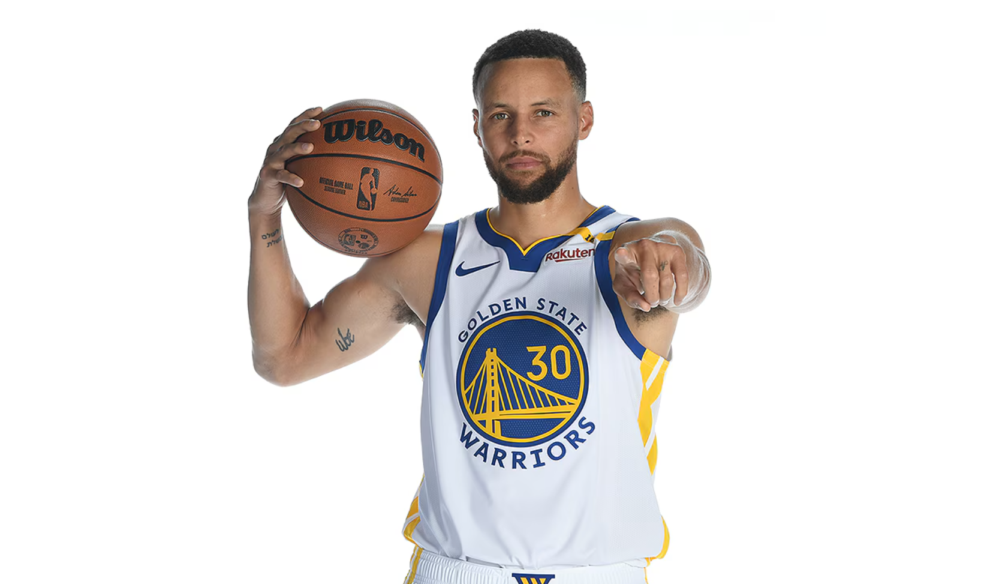

Best Leader, Most Clutch, Best Shooter: NBA GM's High on Stephen Curry Entering Year 16

PNBA.com conducted its annual General Manager survey and Stephen Curry was named the NBA's best leader, 'clutch time' scorer, shooter and off-ball mover. Entering his 16th NBA season, Curry is the NBA's reigning Clutch Player of the Year and hit several clutch baskets to help the United States win Olympic Gold in Paris this summer. In 2023-24, he led the league in made 3-pointers (357) with the third-highest single-season mark in NBA history.
Read below for each of Curry's first place nominations.
Which player is the best leader?
- 1. Stephen Curry, Golden State - 33%
- T-2. Jalen Brunson, New York - 23%
- T-2. LeBron James, L.A. Lakers - 23%
Curry edged out Knicks guard Jalen Brunson and Lakers forward LeBron James as the NBA's best leader, according to league executives. The Warriors have
had a winning record in 11 of the last 12 seasons with Curry and their lone losing campaign (2019-20) was a year in which he played just five games. Curry has
led the team to four NBA championships in his tenure and General Manager Mike Dunleavy referred to him as the "greatest face of a franchise in sports."
- 1. Stephen Curry, Golden State - 40%
- Kevin Durant, Phoenix - 23%
- Luka Doncic, Dallas - 10%
Level Up: Tips for Becoming More Confident on the Soccer Field
Published on February 02, 2022 by TSX
Soccer is a sport enjoyed around the world, and for a good reason: all you need to get into the game are two goals, a ball, and a friend or two. However, as fun as it is to kick a soccer ball around with your buddies, it can be tough not to put pressure on yourself during tryouts, games, and tournaments. If you lack confidence on the soccer field, you’re holding yourself back from being the best soccer player that you can be. Expanding your confidence on the soccer field will help you become a winner both in the game and in life, and these tips will be sure to give you the extra confidence you need to make every part of soccer fun — even with eyes on you.
Practice Positive Self-Talk
Have you ever noticed the voice inside your head taunting you after you miss a shot or make a bad pass? Being hard on yourself with statements like “I’m never going to make that shot,” “We always lose,” or “I stink at soccer” are a result of negative self-talk. The first step you should take when seeking to gain confidence on the soccer field is to replace negative self-talk with positive self-talk. “I can do this,” “Good pass,” and “We can win” are all examples of mantras to repeat to yourself. If you have difficulty being positive, replace negative self-talk with instructional self-talk instead and become your own mental “coach.”